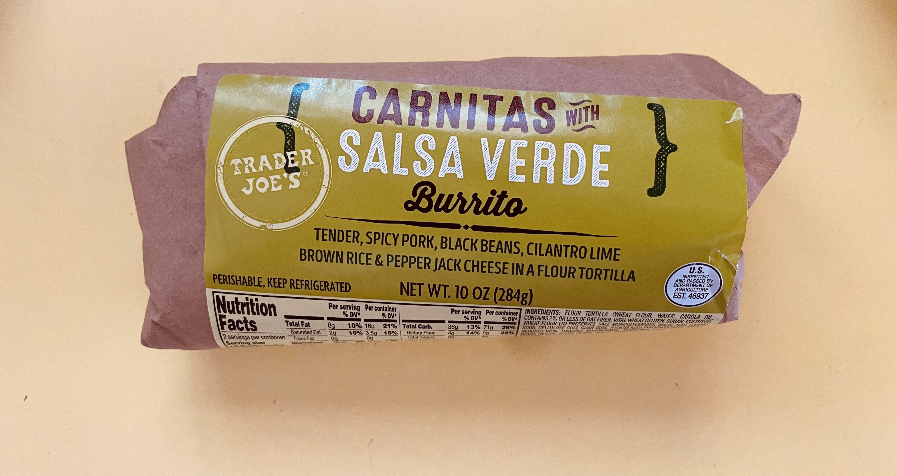

Burrito fom TJs

Description
TJs Carnitas with Salsa Verde Burrito is a delicious and dependable
staple within the Nick Ng diet. Here is how he prepares them.
Ingredients
- burrito
- TJs Green Dragon Hot Sauce
Steps
- Unwrap burrito, loosely rewrap and microwave for 2m15s
- Consume burrito, drizzle sauce onto burrito as you progress.
- Prepare for flatulence.